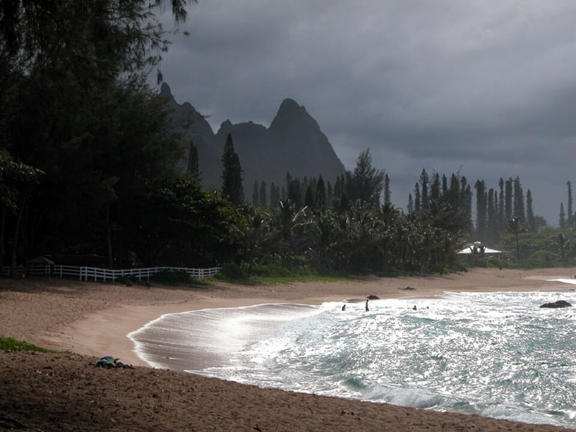

Tunnels Beach (Mākua Beach)
Place: Tunnels Beach (Mākua Beach), Hāʻena, Kauaʻi
Type: Beach / coral reef / traditional fishing landscape
Story it tells: A protected reef and lagoon whose ancient Hawaiian name reflects a place of nourishment and guardianship, while its modern nickname celebrates the underwater lava tubes that made it famous among divers and surfers.

Known around the world as Tunnels Beach, the shoreline's traditional Hawaiian name is Mākua, meaning "parent," "ancestor," or "guardian." The name reflects the area's long history as a place that sustained generations through fishing, fresh water, and fertile lands. Offshore, a broad horseshoe-shaped reef acts as a natural guardian itself protecting the calm lagoon and shoreline behind it.
The modern nickname "Tunnels" did not emerge until the late twentieth century, when scuba divers and surfers popularized the term to describe the reef's remarkable underwater landscape. Ancient lava flows created a maze of submerged tubes, caverns, and trenches beneath the coral. These passages provide habitat and travel routes for sea turtles, reef fish, and other marine life, while winter swells breaking across the shallow reef produce the hollow barrel waves surfers seek.
Before it became a recreation destination, Mākua was part of a thriving Hawaiian community. The sheltered lagoon functioned as an important fishing ground where families harvested reef fish and limu (seaweed), while deep channels through the reef attracted larger pelagic fish. A prominent koʻa, or fishing shrine, once stood near the beach, where fishermen left offerings before heading out onto the water. The reef's protected waters also provided an ideal place to teach younger generations how to swim, paddle canoes, and understand the rhythms of the ocean.
The beach also reflects an important chapter in Hawaiʻi's land history. During the Great Māhele, the surrounding Hāʻena ahupuaʻa passed into the ownership of High Chief Abner Pākī and later his daughter, Princess Bernice Pauahi Bishop. After the property was sold to outside interests, Native Hawaiian residents feared losing the lands their families had occupied for generations. In 1875, thirty-eight residents formed the Hui Kūʻai ʻĀina o Hāʻena and collectively purchased the entire ahupuaʻa, preserving their homes and traditional access to fishing grounds through community land ownership.
More recently, Mākua became the focus of another community effort. By the 2010s, thousands of daily visitors overran the narrow roads and fragile coastal ecosystem. After catastrophic flooding isolated Kauaʻi's North Shore in 2018, local organizations partnered with the State of Hawaiʻi to redesign how Hāʻena State Park would operate. Reservation systems, visitor limits, shuttle transportation, and community co-management now help balance public access with the protection of both cultural resources and the surrounding environment.
Today, Tunnels Beach is a premier snorkeling and surfing destination. During the summer months, the sheltered lagoon offers exceptional visibility and abundant marine life beneath the towering backdrop of Mount Makana. In winter, powerful surf transforms the outer reef into one of Kauaʻi's most challenging breaks. Whether visitors know it as Tunnels or Mākua, the beach continues to reflect centuries of interaction between geology, Hawaiian culture, and community stewardship.